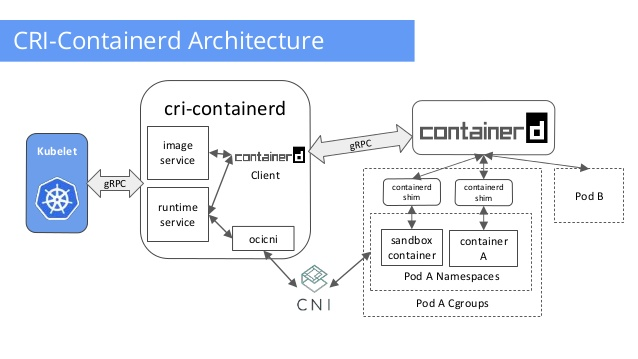
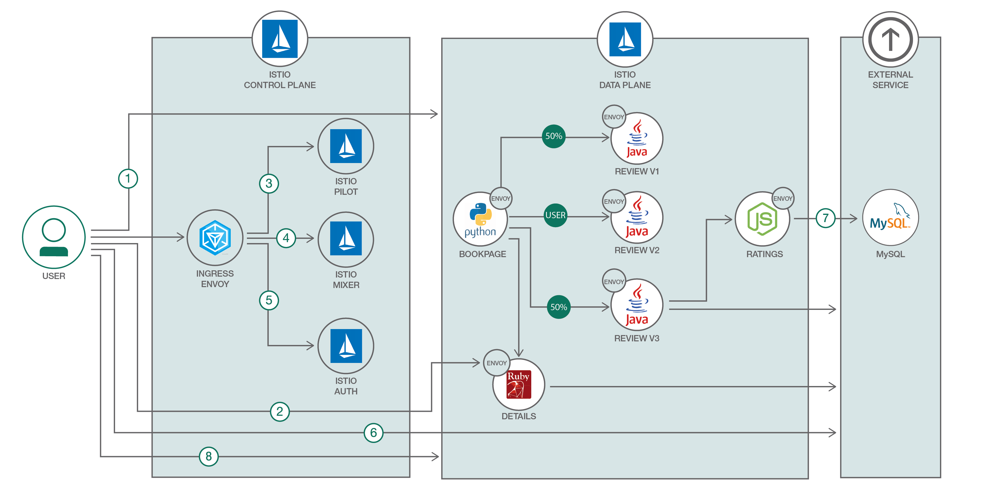

04 容器云平台的构建实践
容器云平台是 Gartner 近些年提出来的云管理平台（Cloud Management Platform，CMP）的企业架构转型衍生品，参考 Gartner 的定义如下：
云管理平台（CMP）是提供对公有云、私有云和混合云整合管理的产品。
从容器化角度总结起来就是两块，第一是功能需求，管理容器运行引擎、容器编排、容器网络、容器存储、监控报警日志。第二是非功能需求，可用性，兼容性，安全和易用性，负载优化等。容器云平台建设的目标是使企业业务应用被更好的运营管理起来。
从云平台的建设步骤来说，大致需要经过以下步骤来梳理实践，顺序不限：
1.选择运行时容器引擎的基准参考。
实际情况是当前容器运行引擎可以选择的品类并不多，只有 Docker 家的组件是最容易搭建的，所以业界选型的时候，都是默认首选以 Docker 组件作为基准来选型环境配置。当然随着云原生基金会（Cloud Native Computing Foundation，CNCF）接纳下当前几乎所有业界领先的云计算厂商成为其成员单位，从而从侧面奠基了以通用容器运行时接口（CRI）为基础的 cri-o 系列容器引擎的流行，参考 CNCF 的架构鸟瞰图可以看到容器运行引擎的最新的发展走向。
从 CNCF 指导下应用上云的趋势来看，已经在模糊私有云计算资源和公有云计算资源的界限，容器运行引擎也不在是 Docker 一家独有，业界已经偏向选择去除厂商绑定的开源通用容器运行时接口（CRI）对接的容器引擎。这种趋势也明显从 DockerCon17 大会上看到 Docker 宣布支持 Kubernetes 一样，容器引擎已经有了新的架构体系可以参考和扩展。如图：

由于社区的快速变革，很多读者可能已经无法详细梳理和理解 CRI-containerd 和 CRI-O 的一些细微差别。所以我还要把 CRI-O 的架构图放在这里方便大家做对比。
2.容器云平台涉及到多租户环境下多个计算节点的资源有效利用和颗粒度更细的资源控制。
Kubernetes 无疑是最佳的开源项目来支撑云平台的实践。Kubernetes 的架构设计是声明式的 API 和一系列独立、可组合的控制器来保证应用总是在期望的状态。这种设计本身考虑的就是云环境下网络的不可靠性。这种声明式 API 的设计在实践中是优于上一代命令式 API 的设计理念。考虑到云原生系统的普及，未来 Kubernetes 生态圈会是类似 Openstack 一样的热点，所以大家的技术栈选择上，也要多往 Kubernetes 方向上靠拢。如图：
3.容器网络其实从容器云平台建设初期就是重要梳理的对象。
容器引擎是基于单机的容器管理能力，网络默认是基于veth pair 的网桥模式，如图所示：
这种网络模型在云计算下无法跨主机通信，一般的做法需要考虑如何继承原有网络方案。所以 CNCF 框架下定义有容器网络接口（CNI）标准，这个标准就是定义容器网络接入的规范，帮助其他既有的网络方案能平滑接入容器网络空间内。自从有了 CNI 之后，很多协议扩展有了实现，OpenSwitch、Calico、Fannel、Weave 等项目有了更具体的落地实践。从企业选型的角度来看当前网络环境下，我们仍然需要根据不同场景认真分析才可以获得更好的收益。常见的场景中
- 物理网络大都还是二层网络控制面，使用原生的 MacVlan/IPVlan 技术是比较原生的技术。
- 从虚拟网络角度入手，容器网络的选择很多，三层 Overlay 网络最为广泛推荐。
- 还有从云服务商那里可以选择的网络环境都是受限的网络，最优是对接云服务的网络方案，或者就是完全放弃云平台的建设由服务商提供底层方案。
网络性能损耗和安全隔离是最头疼的网络特性。使用容器虚拟网桥一定会有损耗，只有最终嫁接到硬件控制器层面来支撑才能彻底解决此类性能损耗问题。所有从场景出发，网络驱动的选择评估可以用过网络工具的实际压测来得到一些数据的支撑。参考例子：
docker run -it --rm networkstatic/iperf3 -c 172.17.0.163
Connecting to host 172.17.0.163, port 5201
[ 4] local 172.17.0.191 port 51148 connected to 172.17.0.163 port 5201
[ ID] Interval Transfer Bandwidth Retr Cwnd
[ 4] 0.00-1.00 sec 4.16 GBytes 35.7 Gbits/sec 0 468 KBytes
[ 4] 1.00-2.00 sec 4.10 GBytes 35.2 Gbits/sec 0 632 KBytes
[ 4] 2.00-3.00 sec 4.28 GBytes 36.8 Gbits/sec 0 1.02 MBytes
[ 4] 3.00-4.00 sec 4.25 GBytes 36.5 Gbits/sec 0 1.28 MBytes
[ 4] 4.00-5.00 sec 4.20 GBytes 36.0 Gbits/sec 0 1.37 MBytes
[ 4] 5.00-6.00 sec 4.23 GBytes 36.3 Gbits/sec 0 1.40 MBytes
[ 4] 6.00-7.00 sec 4.17 GBytes 35.8 Gbits/sec 0 1.40 MBytes
[ 4] 7.00-8.00 sec 4.14 GBytes 35.6 Gbits/sec 0 1.40 MBytes
[ 4] 8.00-9.00 sec 4.29 GBytes 36.8 Gbits/sec 0 1.64 MBytes
[ 4] 9.00-10.00 sec 4.15 GBytes 35.7 Gbits/sec 0 1.68 MBytes
- - - - - - - - - - - - - - - - - - - - - - - - -
[ ID] Interval Transfer Bandwidth Retr
[ 4] 0.00-10.00 sec 42.0 GBytes 36.1 Gbits/sec 0 sender
[ 4] 0.00-10.00 sec 42.0 GBytes 36.0 Gbits/sec receiver
iperf Done.
对于网络安全的需求，一种是策略性的网络速度的限制，还有一种是策略上的租户网络隔离，类似 VPC。这块比较有想法的参考开源项目是 cilium，如图：
4.容器存储是容器应用持久化必须解决的问题。
从容器提出来之后，业界就一直在探索如何在分布式场景下对接一套分布式存储来支撑有状态应用。可惜的是，在 CNCF 的容器存储接口（CSI）定义之下，目前还没有最终完成参考实现，所有大家只能参考一下规范。在没有统一接口之前，我们只能一对一的实现当前的存储接口来调用分布式存储。好在存储并没有太多的选择，除了商用存储之外，开源领域可以选择的无非是 GlusterFS 和 Ceph。一种是作为块存储存在，一种是作为文件存储存在。
从容器使用角度来讲，文件存储是应用场景最多的案例，所以使用 Gluster 类来支持就可以在短时间内实现有状态应用的扩展。这里特别需要提醒一句，容器分布式存储的想法有很多种，并不一定要局限在现有存储方案中，只需要实现 FUSE 协议就可以打造自己的存储，可以参考京东云的容器存储实现 Containerfs 获得灵感：
5.容器云平台定制化需求最多的地方就是管理平台的功能布局和功能范围。
云平台常常只覆盖底层组件80%左右的功能映射，并不是完全100%匹配。所有通用型云平台的设计实现需要从各家的场景需求出发，大致分为 DevOps 领域的集成开发平台，也可以是支撑微服务的管控平台。两个方向差距非常大，难以放在一起展现，大家的做法就是在行业专家理解的基础之上进行裁剪。目前行业可以参考的案例有 Rancher 的面板，还有 Openshift 的面板，并且谷歌原生的容器面板也是可以参考，如图：
6.镜像仓库的建设和管理，大家往往趋向于对管理颗粒度的把控。这块，可以参考的开源项目有 Harbor。
围绕镜像仓库的扩展需求还是非常多的，比如和 CI/CD 的集成，帮助用户从源码层面就自动构建并推入到仓库中。从镜像的分发能不能提供更多的接口，不仅仅是 Docker pull 的方式，可能需要通过 Agent 提前加载镜像也是一种业务需求。相信不久就会有对应的方案来解决这块的扩展问题。
7.还有非功能的需求也是需要考虑的。
比如云平台的高可用怎么实现，是需要考虑清楚的。一般分布式系统都有三个副本的主控节点，所有从方便性来讲，会把云管理平台放在3台主控节点上复用部署，通过Haproxy 和 Keeplived 等技术实现面板访问入口的高可用。还有当云平台还有 DB 需求时，需要单独的数据库主备模式作为 DB 高可用的选项，当然选择分布式 DB 作为支持也是可选项，当时这块就需要把 DB 服务化了。
当你真实引入这些组件部署之后，会发现需要冗余的组件是很多的，无状态的组件和有状态的组件并不能随便的混部，需要根据业务场景归类好。通常从可用性上来讲是应该抽离出来单独放把云管理平台部署两台机器上做高可用。其他部分中容器调度集群系统本身就是分布式设计，天然就有高可用的布局，可以直接利用。从应用上 Kubernets 开始很多分布式的优势会立即受益，我们主要的关心重点在于对集群控制器的业务需求扩展实现和算法调度管理。
8.微服务尤其是 Google Istio 的推出对服务网格化的需求，给容器云平台注入了新的实际的微服务场景，可以预见是未来容器云平台应用的一个重要场景。如下图所示。
弱化网关的单入口性，把网关做成了业务控制面板，可以任意的调度用户的请求流量。这是对上一代以 API 网关为中心的微服务的进化，必将引起软件架构的变革。

综上所述，云平台的构建实践不是一蹴而就的。需要结合业务场景在方方面面给予规划并分而治之。技术栈的不断迭代，让云计算开始有了很多新内容可以学习和实践。但是，很多历史遗留的应用的容器化工作还是非常棘手的。附加上流程变革的时间进度，我们还是需要在很多方面折中并给出一些冗余的方案来适配传统业务体系的需求。所有，通过以上功能性和非功能性的需求参考，相信可以加快企业构建云平台的步伐并给予一些必要的指导参考。